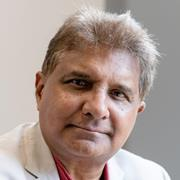

Reading works from these authors helped me form the opinions I hold.
Yuan Hsiaois an Assistant Professor at the University of Washington and works in the Deprtments of Sociology and Department of Statistics. Scott Radnitz is an Associate Professor at the University of Washington and researches eurasian society and culture around protests, authoritarianism, informal networks, and identity among other topics. Together they authored, “Allies or Agitators? How Partisan Identity Shapes Public Opinion about Violent or Nonviolent Protests”.
Igor Grossmann is a Ph.D. Associate Professor of Psychology at the University of Waterloo and along with multiple contributers authored, “The Science of Wisdom in a Polarized World: Knowns and Unknowns”.

Raphael Lataster is a Ph.D. Lecturer at the University of Sydney and studies religion and philosophy. Rumy Hasan is a Senior Lecturer at the University of Sussex and researches, economics of the transition of former Eastern bloc communist countries, international business with a special interest in strategic alliances, the political economy of China and East Asia, and the development of Nigeria. Together they authored, “Why Much of the Liberal Left Can Now Be Termed ‘Regressive’: Discourses on Trump, Immigration, and Islam”.

Scott Ellison is a Ph.D. Associate Professor at the University of Northern Iowa who specializes in sociology and philosophy of education. He authored, “Against Fragmentation: Critical Education Scholarship in a Time of Crisis”.
The Pew Research Center is respected and prominent polling research organization. They published “Partisanship and Political Animosity in 2016” in the category of U.S. Politics & Policy.